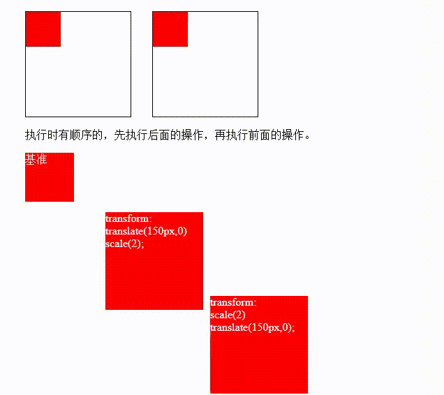

需求:
使得元素进行移动，缩放，旋转
示例：
Test_area：
执行时有顺序的，先执行后面的操作，再执行前面的操作。
基准
transform:
translate(150px,0)
scale(2);
translate(150px,0)
scale(2);
transform:
scale(2)
translate(150px,0);
scale(2)
translate(150px,0);
知识点：
ranslate : 位移
scale : 缩放 (以中心点进行缩放)
rotate : 旋转(rotateZ 和rotate等价，平面沿z轴旋转)
skew : 斜切
注：设置多个值时候的顺序；设置transform-origin的基点位置 旋转基点
transform 变形元素不会影响其他元素
变形 只能添加给块元素，内联元素无用
复合写法：可以同时添加多个变形操作。
执行时有顺序的，先执行后面的操作，再执行前面的操作。
translate会受到rotate，scale skew的影响，除非translate写在最前或最后执行
html源代码：
<section style="overflow: hidden;">
<div class="outer">
<div id="inside1"></div>
</div>
<div class="outer">
<div id="inside2"></div>
</div>
</section>
<section>
<p>执行时有顺序的，先执行后面的操作，再执行前面的操作。</p>
<section >
<div class="box1">基准</div>
<div class="box2">transform: <br>translate(150px,0) <br>scale(2);</div>
<div class="box3">transform: <br>scale(2) <br>translate(150px,0);</div>
</section>
</section>
css源代码：
<style>
.outer{width: 150px;height:150px;border: 1px black solid;position: relative;float: left;margin-right: 30px;}
#inside1{width: 50px;height: 50px;background: red;transition: 1s;position: 0,0;}
#inside2{width: 50px;height: 50px;background: red;transition: 1s;position: 0,0;}
.outer:hover #inside1{transform: translate(50px,50px) scale(2,2) rotate(45deg);}
.outer:hover #inside2{transform: translate(50px,50px) scale(2,2) skew(-30deg,-30deg);}
.box1{font-size: 16px;}
.box1,.box2,.box3{width: 70px;height: 70px;background: red;word-wrap: break-word;color: white; margin-bottom: 50px;}
.box2{font-size: 8px;transform: translate(150px,0) scale(2);}
.box3{font-size: 8px;transform: scale(2) translate(150px,0);}
</style>